Camp Under the Amatolas. Illustration from W. R. King, Campaigning in Kaffirland or Scenes and Adventures in the Kaffir War of 1851-2, second edition (London: Saunders and Otley, 1855), frontispiece. Courtesy of the Internet Archive. This image shows a military encampment during the Eighth Cape Frontier War. The Amatola Mountains, in South Africa’s Eastern Cape, were the setting for multiple encounters between British and AmaXhosa forces in the Seventh, Eighth, and Ninth Cape Frontier Wars.
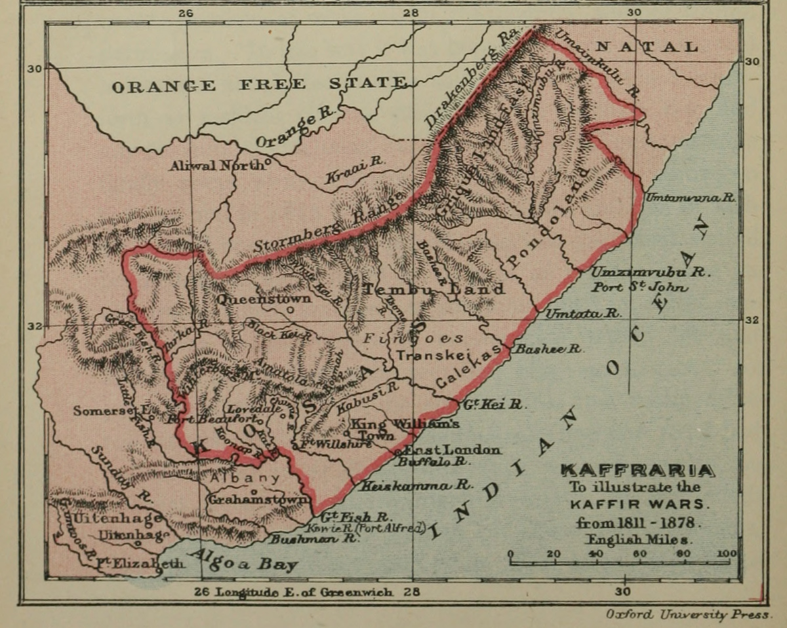
Map to Illustrate the Kaffir Wars. Map from C. P. Lucas, A Historical Geography of the British Colonies, 6 vols (Oxford: Clarendon, 1897), 4:opposite 149. Courtesy of the Internet Archive. This map shows the geographical area, in present-day Eastern Cape province, in which the Cape Frontier Wars were fought between the late-eighteenth and late-nineteenth centuries. The lands inhabited by the AmaXhosa were referred to historically as Kaffraria by European settlers.
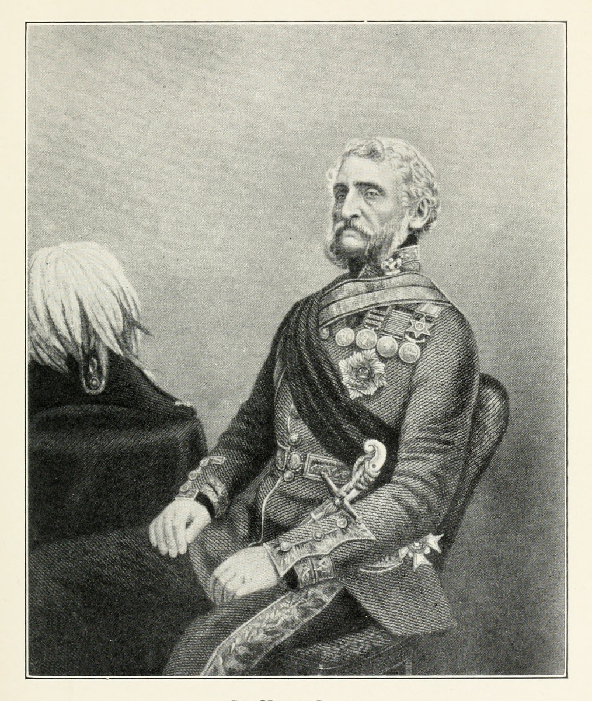
Portrait of Sir Harry Smith. Illustration from Geo. E. Cory, The Rise of South Africa: A History of the Origin of South African Colonisation and its Development Towards the East from the Earliest Times to 1857, 6 vols (London: Longmans, Green and Co., 1930), 5:opposite 98. Courtesy of the Internet Archive. Sir Harry Smith was Governor of the Cape of Good Hope and Lieutenant-General of the Cape forces between 1847 and 1852.
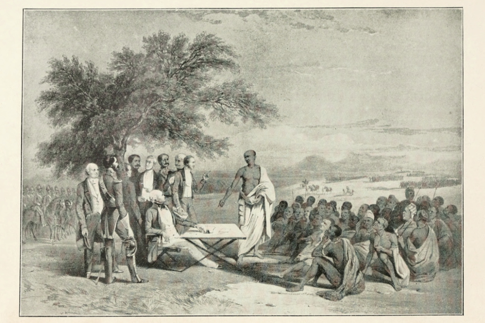
Conference Between Col. Hare and Sandilli, from Sketch by Sir Harry Darrell. Illustration from Geo. E. Cory, The Rise of South Africa: A History of the Origin of South African Colonisation and its Development Towards the East from the Earliest Times to 1857, 6 vols (London: Longmans, Green and Co., 1926), 4:frontispiece. Courtesy of the Internet Archive. This scene depicts negotiations between Colonel John Hare and the AmaXhosa chief, Sandile, which took place in early 1846 prior to the outbreak of the Seventh Cape Frontier War. The illustration, which portrays Sandile as a "noble savage," provides insight into mid-nineteenth century representations of the AmaXhosa. More specifically, the imagery connects Sandile to classical antiquity, a link that dignifies the AmaXhosa but also portrays them as a people belonging to an earlier period of history (see Lester 2001:55).
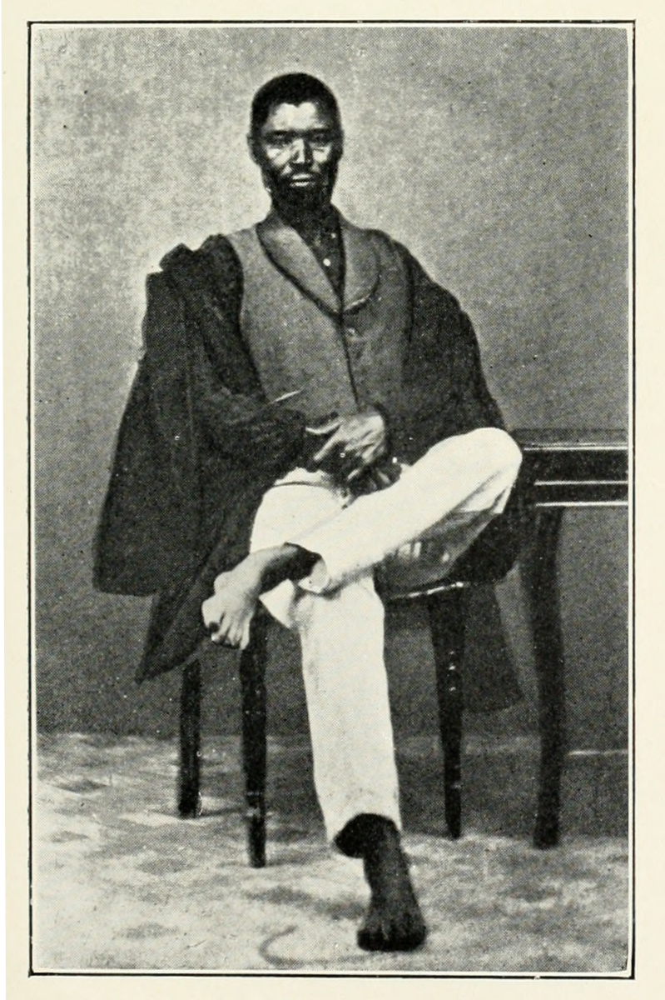
Chief Sandilli. Illustration from Geo. E. Cory, The Rise of South Africa: A History of the Origin of South African Colonisation and its Development Towards the East from the Earliest Times to 1857, 6 vols (London: Longmans, Green and Co., 1930), 5:opposite 298. Courtesy of the Internet Archive. Sandile was paramount chief of the Ngqika AmaXhosa and a major leader of AmaXhosa forces in the Seventh, Eighth, and Ninth Cape Frontier Wars. He was killed in conflict in 1878, during the Ninth Frontier War (1877-79).
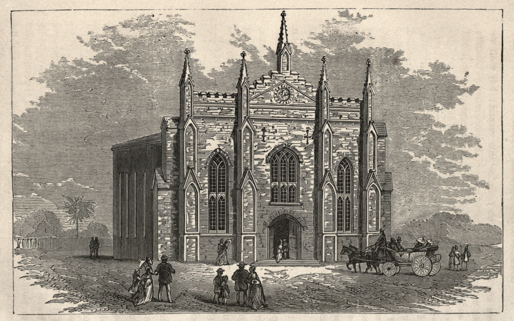
Commemoration Chapel, Graham’s Town. Illustration from Memoir of the Rev. William Shaw, Late General Superintendent of the Wesleyan Missions in South-Eastern Africa (London: William Nichols, 1875), opposite 217. Courtesy of the Internet Archive. Construction of this Methodist chapel in Grahamstown was begun in 1845 to mark the silver jubilee of British settlement of Albany in South Africa’s Eastern Cape. Building was delayed by the Seventh Frontier War but was completed in November 1850.
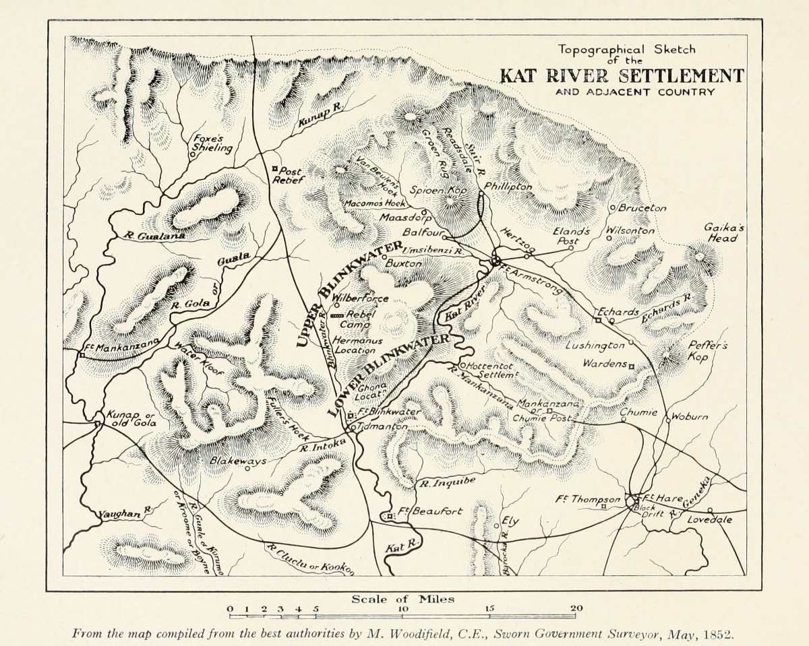
Topographical Sketch of the Kat River Settlement and Adjacent Country. From the Map Compiled From the Best Authorities by M. Woodifield, C. E., Sworn Government Surveyor, May, 1852. Illustration from Geo. E. Cory, The Rise of South Africa: A History of the Origin of South African Colonisation and its Development Towards the East from the Earliest Times to 1857, 6 vols (London: Longmans, Green and Co., 1930), 5:opposite 326. Courtesy of the Internet Archive. This sketch delineates the geography of the Kat River Settlement and surrounding regions as they appeared in the early 1850s, around twenty years after the settlement was established.
| 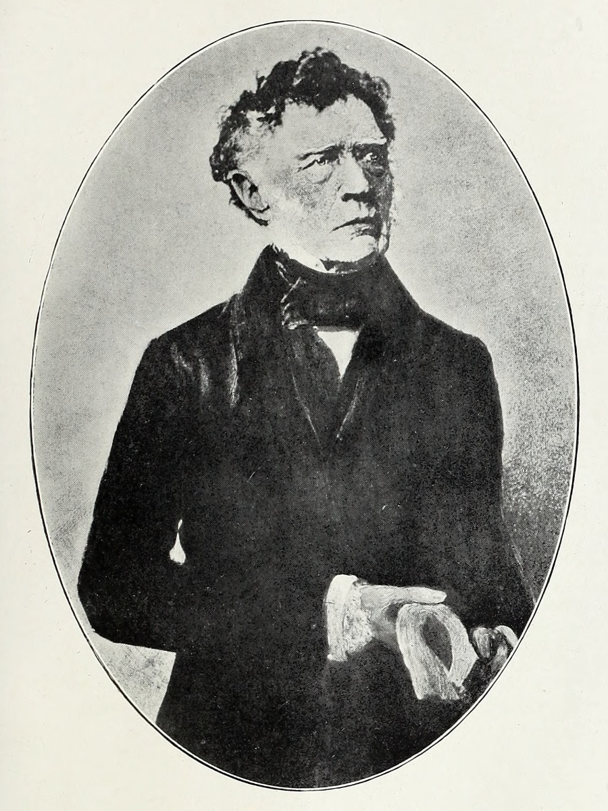 |  |
(Left; top in mobile) Sir Andries Stockentrom, Bart. (Right; bottom in mobile) Sir Benjamin Durban. Illustrations from Geo. E. Cory, The Rise of South Africa: A History of the Origin of South African Colonisation and its Development Towards the East from the Earliest Times to 1857, 6 vols (London: Longmans, Green and Co., 1919), 3:opposite 340, opposite 102. Courtesy of the Internet Archive. Sir Andries Stockenstrom was Lieutenant-Governor of the Eastern Cape between 1836 and 1839. Sir Benjamin D’Urban was Commander-in-Chief and Governor of the Cape of Good Hope between 1833 and 1837.
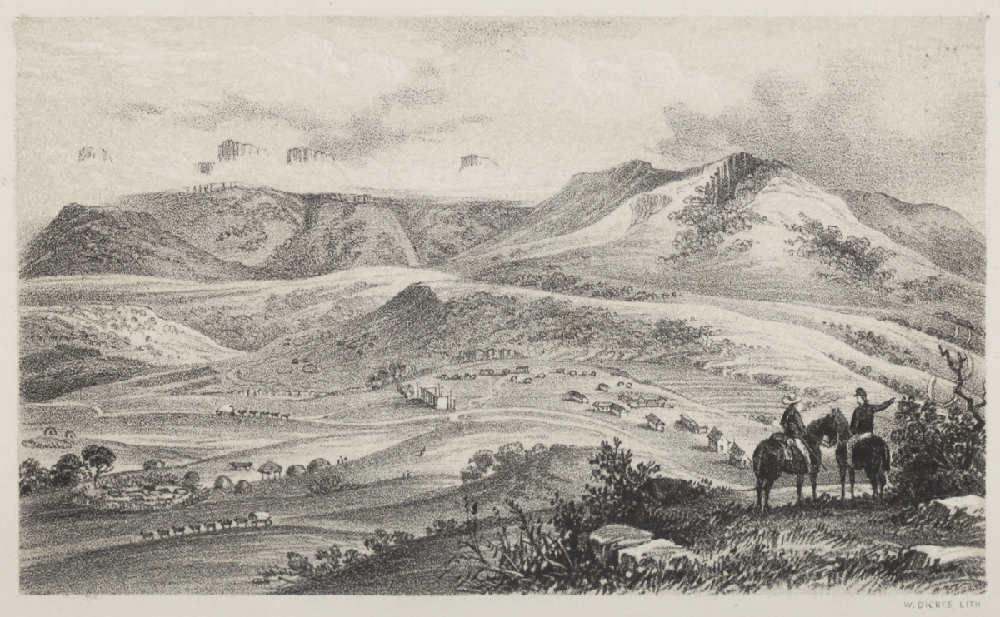
Philipton, Kat River Settlement, South Africa. Illustration from J. J. Freeman, A Tour in South Africa, with Notices of Natal, Mauritius, Madagascar, Ceylon, Egypt, and Palestine (London: John Snow, 1851), frontispiece. Courtesy of the Internet Archive. The Khoekhoe congregation led by the London Missionary Society agent, James Read, was based at Philipton in the Kat River Settlement.
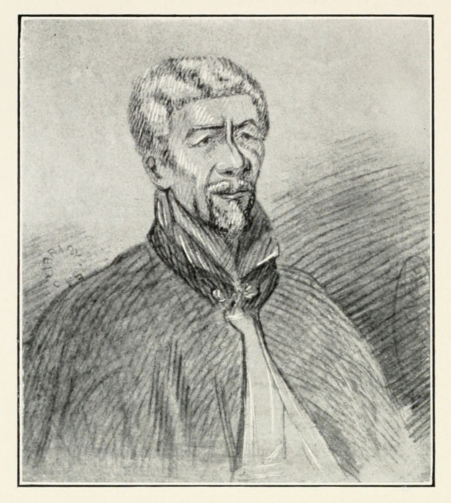
Andries Botha. Illustration from Geo. E. Cory, The Rise of South Africa: A History of the Origin of South African Colonisation and its Development Towards the East from the Earliest Times to 1857, 6 vols (London: Longmans, Green and Co., 1930), 5:opposite 343. Courtesy of the Internet Archive. Andries Botha was a Khoekhoe leader and Veldcornet of the Kat River. He was initially condemned to execution for his alleged involvement in the Kat River Rebellion, but subsequently had his sentence commuted.
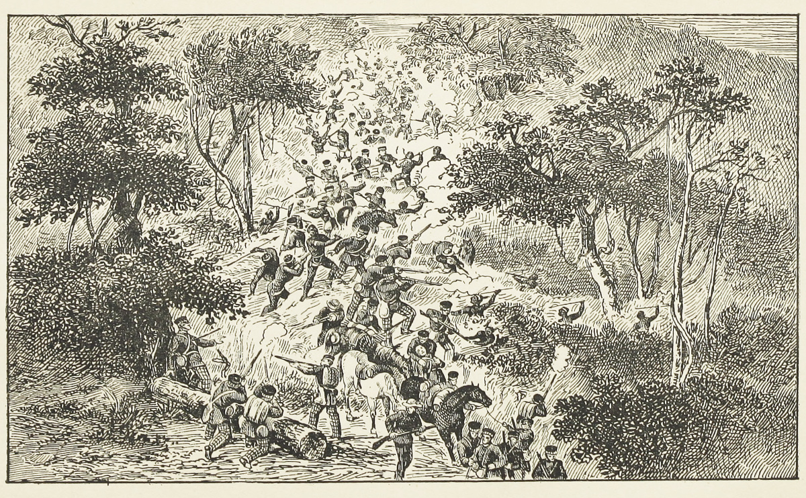
Attack of the Kaffirs on the Troops Under the Command of Lt.-Col. Fordyce of the 74th Highlanders. Illustration from Duncan Campbell Francis Moodie, The History of the Battles and Adventures of the British, the Boers, and the Zulus, &c., in Southern Africa, 2 vols (Cape Town: Murray & St. Leger, 1888), 2:opposite 49. Courtesy of the Internet Archive. This scene commemorates the stand of the 74th Highlanders against an AmaXhosa ambush that took place in September 1851, during the Eighth Cape Frontier War, as the British regiment withdrew following an incursion into the Waterkloof Highlands of the Eastern Cape. The illustration thus valorises British defence against the guerrilla tactics of the AmaXhosa forces.
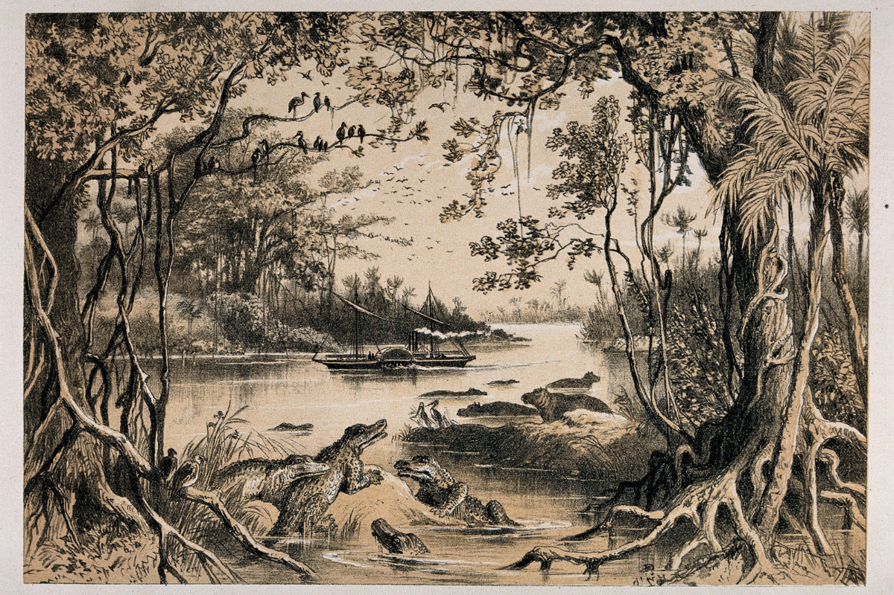
The Ma-Robert on the Zambesi. Copyright Wellcome Library, London. Creative Commons Attribution 4.0 International. While he worked on Missionary Travels in 1857, Livingstone also made arrangements for a major government-supported journey to central Africa: the Zambezi Expedition (1858-64). On this expedition, Livingstone led a team of six Europeans with the remit of investigating the natural resources and opportunities for British trade on the Zambezi River. The Ma-Robert was a steamer built by Macgregor Laird for river transportation, but which proved unsatisfactory in navigating shallow sections of the Zambezi.
| 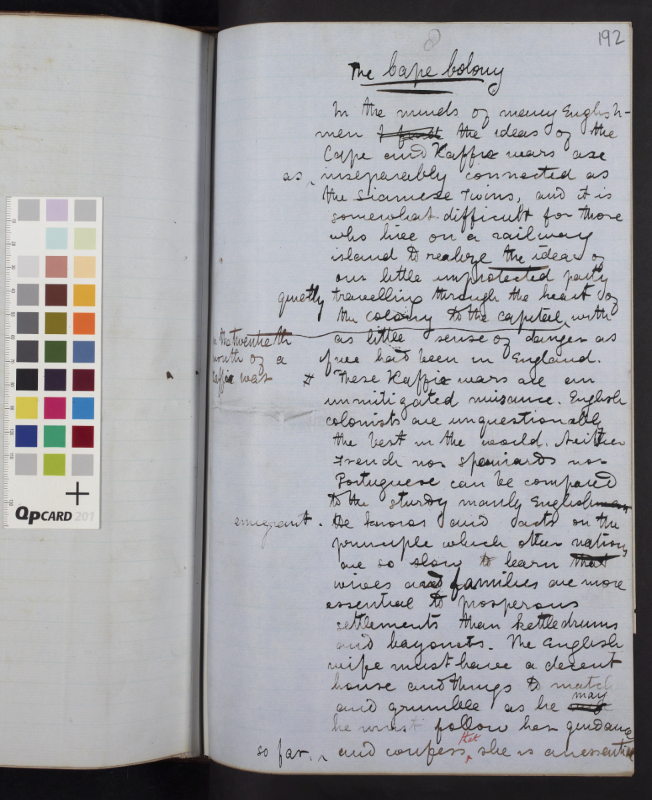 | 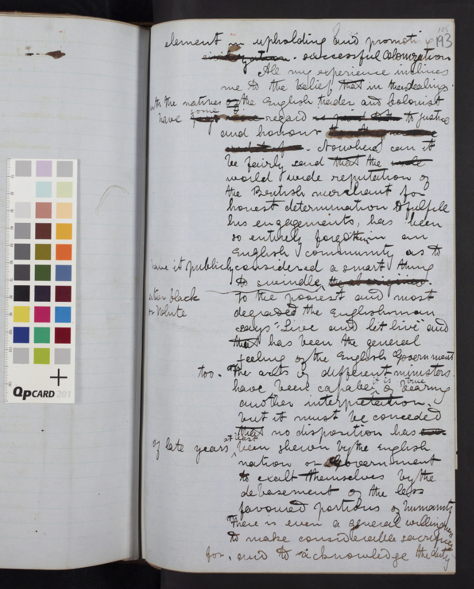 |
Images of two pages from the Missionary Travels manuscript (Livingstone 1857dd:[197]-[198]). Copyright National Library of Scotland and Dr. Neil Imray Livingstone Wilson (as relevant). Creative Commons Share-alike 2.5 UK: Scotland. These manuscript pages open Livingstone's long passage (later redacted) on the “The Cape Colony,” in which he discusses the Cape Frontier Wars and the Kat River Rebellion.
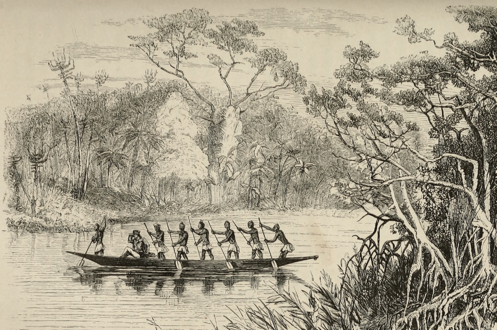
River Scenery on the West Coast. From a Sketch by Capt. H. Need, R. N. Illustration from Missionary Travels (Livingstone 1857aa:opposite 332), detail. Courtesy of the Internet Archive. The illustrations included in Missionary Travels contributed to the book’s popularity and helped establish the iconic imagery that would become associated with Livingstone. For instance, some of the book’s illustrations, including the scene above, provided the basis for a series of magic lantern slides published by John Murray (c.1857). These slides are available for consultation in the "Associated Images and Texts" section of the present edition.